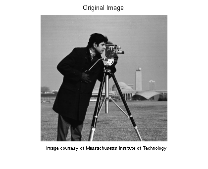
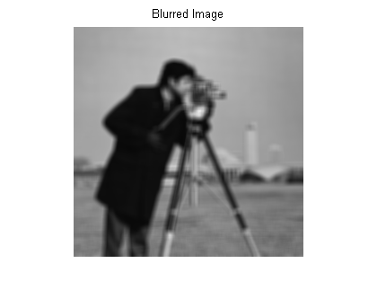
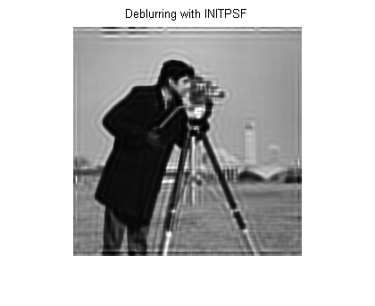
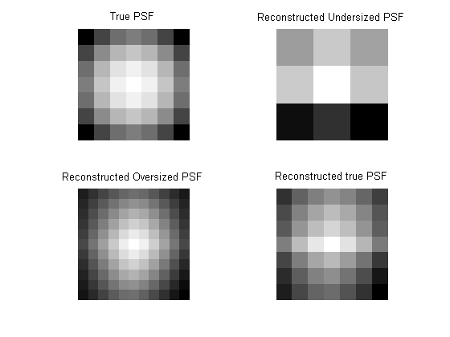
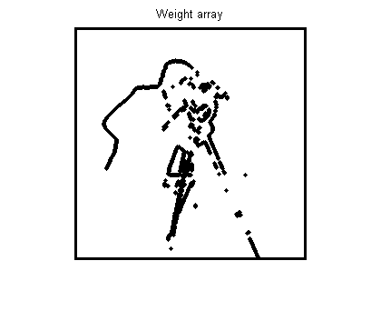

Deblurring Images Using the Blind Deconvolution Algorithm
The Blind Deconvolution Algorithm can be used effectively when no information about the distortion (blurring and noise) is known. The algorithm restores the image and the point-spread function (PSF) simultaneously. The accelerated, damped Richardson-Lucy algorithm is used in each iteration. Additional optical system (e.g. camera) characteristics can be used as input parameters that could help to improve the quality of the image restoration. PSF constraints can be passed in through a user-specified function
Contents
Step 1: Read Image
The example reads in an intensity image. The deconvblind function can handle arrays of any dimension.
I = imread('cameraman.tif'); figure;imshow(I);title('Original Image'); text(size(I,2),size(I,1)+15, ... 'Image courtesy of Massachusetts Institute of Technology', ... 'FontSize',7,'HorizontalAlignment','right');
Step 2: Simulate a Blur
Simulate a real-life image that could be blurred (e.g., due to camera motion or lack of focus). The example simulates the blur by convolving a Gaussian filter with the true image (using imfilter). The Gaussian filter then represents a point-spread function, PSF.
PSF = fspecial('gaussian',7,10); Blurred = imfilter(I,PSF,'symmetric','conv'); figure;imshow(Blurred);title('Blurred Image');
Step 3: Restore the Blurred Image Using PSFs of Various Sizes
To illustrate the importance of knowing the size of the true PSF, this example performs three restorations. Each time the PSF reconstruction starts from a uniform array--an array of ones.
The first restoration, J1 and P1, uses an undersized array, UNDERPSF, for an initial guess of the PSF. The size of the UNDERPSF array is 4 pixels shorter in each dimension than the true PSF.
UNDERPSF = ones(size(PSF)-4);
[J1 P1] = deconvblind(Blurred,UNDERPSF);
figure;imshow(J1);title('Deblurring with Undersized PSF');
The second restoration, J2 and P2, uses an array of ones, OVERPSF, for an initial PSF that is 4 pixels longer in each dimension than the true PSF.
OVERPSF = padarray(UNDERPSF,[4 4],'replicate','both'); [J2 P2] = deconvblind(Blurred,OVERPSF); figure;imshow(J2);title('Deblurring with Oversized PSF');
The third restoration, J3 and P3, uses an array of ones, INITPSF, for an initial PSF that is exactly of the same size as the true PSF.
INITPSF = padarray(UNDERPSF,[2 2],'replicate','both'); [J3 P3] = deconvblind(Blurred,INITPSF); figure;imshow(J3);title('Deblurring with INITPSF');
Step 4: Analyzing the Restored PSF
All three restorations also produce a PSF. The following pictures show how the analysis of the reconstructed PSF might help in guessing the right size for the initial PSF. In the true PSF, a Gaussian filter, the maximum values are at the center (white) and diminish at the borders (black).
figure; subplot(221);imshow(PSF,[],'InitialMagnification','fit'); title('True PSF'); subplot(222);imshow(P1,[],'InitialMagnification','fit'); title('Reconstructed Undersized PSF'); subplot(223);imshow(P2,[],'InitialMagnification','fit'); title('Reconstructed Oversized PSF'); subplot(224);imshow(P3,[],'InitialMagnification','fit'); title('Reconstructed true PSF');
The PSF reconstructed in the first restoration, P1, obviously does not fit into the constrained size. It has a strong signal variation at the borders. The corresponding image, J1, does not show any improved clarity vs. the blurred image, Blurred.
The PSF reconstructed in the second restoration, P2, becomes very smooth at the edges. This implies that the restoration can handle a PSF of a smaller size. The corresponding image, J2, shows some deblurring but it is strongly corrupted by the ringing.
Finally, the PSF reconstructed in the third restoration, P3, is somewhat intermediate between P1 and P2. The array, P3, resembles the true PSF very well. The corresponding image, J3, shows significant improvement; however it is still corrupted by the ringing.
Step 5: Improving the Restoration
The ringing in the restored image, J3, occurs along the areas of sharp intensity contrast in the image and along the image borders. This example shows how to reduce the ringing effect by specifying a weighting function. The algorithm weights each pixel according to the WEIGHT array while restoring the image and the PSF. In our example, we start by finding the "sharp" pixels using the edge function. By trial and error, we determine that a desirable threshold level is 0.3.
WEIGHT = edge(I,'sobel',.3);
To widen the area, we use imdilate and pass in a structuring element, se.
se = strel('disk',2);
WEIGHT = 1-double(imdilate(WEIGHT,se));
The pixels close to the borders are also assigned the value 0.
WEIGHT([1:3 end-[0:2]],:) = 0;
WEIGHT(:,[1:3 end-[0:2]]) = 0;
figure;imshow(WEIGHT);title('Weight array');
 The image is restored by calling deconvblind with the WEIGHT array and an increased number of iterations (30). Almost all the ringing is suppressed.
[J P] = deconvblind(Blurred,INITPSF,30,[],WEIGHT);
figure;imshow(J);title('Deblurred Image');
Step 6: Using Additional Constraints on the PSF Restoration
The example shows how you can specify additional constraints on the PSF. The function, FUN, below returns a modified PSF array which deconvblind uses for the next iteration.
In this example, FUN modifies the PSF by cropping it by P1 and P2 number of pixels in each dimension, and then padding the array back to its original size with zeros. This operation does not change the values in the center of the PSF, but effectively reduces the PSF size by 2*P1 and 2*P2 pixels.
P1 = 2; P2 = 2; FUN = @(PSF) padarray(PSF(P1+1:end-P1,P2+1:end-P2),[P1 P2]);
The anonymous function, FUN, is passed into deconvblind last.
In this example, the size of the initial PSF, OVERPSF, is 4 pixels larger than the true PSF. Setting P1=2 and P2=2 as parameters in FUN effectively makes the valuable space in OVERPSF the same size as the true PSF. Therefore, the outcome, JF and PF, is similar to the result of deconvolution with the right sized PSF and no FUN call, J and P, from step 4.
[JF PF] = deconvblind(Blurred,OVERPSF,30,[],WEIGHT,FUN);
figure;imshow(JF);title('Deblurred Image');
If we had used the oversized initial PSF, OVERPSF, without the constraining function, FUN, the resulting image would be similar to the unsatisfactory result, J2, achieved in Step 3.
Note, that any unspecified parameters before FUN can be omitted, such as DAMPAR and READOUT in this example, without requiring a place holder, ([]).